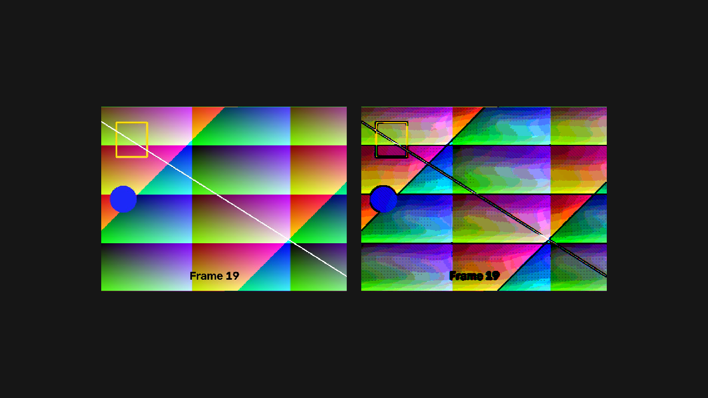

VISIÓN ARTIFICIAL · PROYECTO INTEGRADOR · PARTE I
Efecto Spiderman:
video, OpenCL y visualización 3D
Implementaciones de escritorio y Android con un núcleo C++ compartido.
Revisión y mediciones: 15 de noviembre de 2026.
1. Introducción y problema
El proyecto convierte video en una imagen de cómic mediante operaciones espaciales y máscaras de píxeles. Se busca conservar la estructura visible de la escena, reducir sus colores y producir contornos, puntos de impresión y separación RGB. La inspiración visual procede de la combinación de dibujo y renderizado estilizado descrita por Sony Pictures Imageworks para Into the Spider-Verse [1]; no se reproduce el sistema de producción de la película.
El problema técnico consiste en mantener una secuencia comprensible, permitir cambios de carga durante el video y comparar dos rutas de ejecución sin confundir el tiempo de envío a GPU con el trabajo terminado. OpenCV ofrece operaciones de visión en una arquitectura reutilizable para diferentes plataformas; Pulli y colaboradores presentan este enfoque general [2].
El alcance es exclusivamente la Parte I de la guía actual, páginas 3–8. No se incluyen ASL, FFT, clasificadores ni Telegram.
2. Solución y recorrido del fotograma
Una sola plantilla Efecto<Imagen> contiene el algoritmo. Con Mat se ejecuta la ruta CPU; con UMat se habilita T-API mediante cv::ocl::setUseOpenCL(true). Los parámetros se validan antes de procesar. No hay dos versiones independientes de la matemática.
| Filtro de clase | Aplicación | Referencia adaptada |
|---|---|---|
| CLAHE | Contraste local sobre L en Lab, no sobre cada canal de color | Ejemplo 5, Unidad 2 |
| Mediana 3×3 | Reduce valores aislados antes de contornos y LUT | Ejemplos 5 y 9, Unidad 2 |
| Gaussiano | Suaviza; tamaño impar 3–51 y sigma 0.1–10 | Ejemplo 6, Unidad 2 |
| Sobel X/Y | Magnitudes direccionales combinadas con pesos 0.5/0.5 | Ejemplo 6, Unidad 2 |
CLAHE se apoya en el tratamiento de ecualización adaptativa y limitación del contraste estudiado por Pizer y colaboradores [3]. La combinación artística añade el kernel propio y operaciones de umbral, LUT, selección de color y manipulación de píxeles.
3. Diseño matemático del filtro propio
[ -a -1 0 ]
K(a) = [ -1 4+2a -1 ] / (4+2a), 0 ≤ a ≤ 3
[ 0 -1 -a ]La suma de los coeficientes es (4+2a−4−2a)/(4+2a)=0. Para una región constante de intensidad c, la respuesta es c·sum(K)=0. El término central contrasta con sus vecinos y responde a cambios de intensidad. El parámetro a modifica dos vecinos diagonales; la matriz mantiene simetría de 180°, por lo que aquí la correlación aplicada por filter2D coincide con la convolución.
P = filter2D(G, K(a)) // G: gris suavizado, P en CV_32F S = 0.5·abs(SobelX(G)) + 0.5·abs(SobelY(G)) D = (1−w)·S + w·abs(P) // 0 ≤ w ≤ 1 M(x,y) = 255 si D(x,y) > umbral; 0 en otro caso
La implementación convierte cada magnitud a ocho bits con redondeo y saturación antes de mezclarla. No utiliza la norma euclídea del gradiente: utiliza la aproximación ponderada de clase. El valor inicial es a=1, w=0.30, umbral=40. A mayor umbral, menos píxeles reciben tinta. El signo se conserva hasta obtener la magnitud, evitando perder respuestas negativas en una imagen sin signo.
El nombre Spiderman identifica el pipeline artístico completo, no un kernel estándar publicado. El kernel propio es una variante parametrizada de tipo laplaciano; no se presenta como una nueva familia de detectores.
La LUT aproxima cada intensidad a uno de n niveles: q(I)=round(I·(n−1)/255)·255/(n−1). Los puntos usan celdas 8×8 y r=round((255−I)·R/255); se limitan a gris 70–180 y conservan 65 % del color. El rayado de sombras conserva 70 %. Los contornos se calculan antes de estas texturas para no detectar sus propios puntos. El glitch desplaza azul a la derecha y rojo a la izquierda; verde permanece fijo.
4. Implementaciones y controles
Escritorio
Principal.cpp captura, toma parámetros, ejecuta el efecto y registra tiempos. HighGUI conserva el original, doce trackbars y métricas. El resultado procesado se presenta en cv::viz: dos planos WImage3D reciben original y efecto. Vista3D::actualizar llama a setImage en cada fotograma y a spinOnce; no detiene la captura con un segundo ciclo spin. La escena se abre al iniciar, mantiene la pose y se puede cerrar/reabrir con V. Arrastrar rota los planos. No hay estimación de profundidad.

Android
Kotlin/XML administra cámara y SeekBars; JNI llama al C++ nativo. ProcesadorAndroid.hpp convierte RGBA a BGR y devuelve RGBA del mismo tamaño para el Bitmap. En comparación muestra las dos imágenes completas, ajustadas a sus paneles sin deformación: vertical u horizontal según las dimensiones entregadas por cámara. Se conservan nueve vistas, incluyendo intermedios.
Los doce controles comparten valores y rangos con el escritorio: umbral, tamaño Gaussiano, sigma, peso propio, diagonal, niveles, radio, saturación, brillo, neón, glitch y CLAHE. El tamaño impar incrementa carga espacial; el peso controla la contribución del detector propio. La app móvil muestra ms, FPS de vista, CPU, PSS y RAM disponible. Rechaza resultados tardíos de una medición detenida y exporta CSV fuera del hilo de interfaz.
La GPU debe detectarse realmente. T-API puede ejecutar algunas operaciones en CPU: disponer de UMat no garantiza que todas sean kernels GPU. Las funciones de control OpenCL se documentan en OpenCV [4]; la versión instalada y probada aquí es 5.0.0.
5. Método de medición
Equipo: AMD Ryzen 9 7845HX, 24 procesadores lógicos, 31.2 GiB RAM; NVIDIA GeForce RTX 4070 Laptop GPU, controlador 617.42. Ejecutable Release C++17, OpenCV 5.0.0.
Se generó un clip determinista MJPG de 240 fotogramas, 640×480, con gradientes y figuras móviles. No es una grabación de cámara ni del teléfono. Se ejecutó un proceso independiente por modo y tamaño, con 120 muestras cada uno. Cada proceso calienta al menos 15 fotogramas y 1.1 segundos, luego rebobina la misma entrada. Los demás parámetros se mantienen iguales: sigma 1.73, peso 0.30, diagonal 1, umbral 40, ocho niveles, radio 1, saturación 1.25, brillo 1, neón 1.15, glitch 1 y CLAHE 1.5.
.\build\interciclo_vision.exe --benchmark --source=entrada.avi --mode=cpu --frames=120 --kernel=51 --output=cpu.csv .\build\interciclo_vision.exe --benchmark --source=entrada.avi --mode=gpu --frames=120 --kernel=51 --output=gpu.csv
Se repite con kernel 5, 31 y 51. La GPU se sincroniza con ocl::finish(). ms_proceso incluye subida, filtro y bajada; ms_ciclo añade lectura y redimensionado, pero no ventanas ni ritmo de cámara. Se informa FPS_proceso=1000/media(ms_proceso) y FPS_ciclo=1000/media(ms_ciclo), no la media de recíprocos. RAM es el Working Set total del proceso en MiB; no es VRAM. CPU/PDH se muestrean aproximadamente a 1 Hz y mantienen la última muestra, que puede incluir calentamiento.
6. Resultados observados
| Ruta | Gaussiano | ms proceso | FPS proceso | FPS ciclo | RAM media MiB | RAM máx. MiB |
|---|---|---|---|---|---|---|
| Mat / CPU | 5×5 | 4.981 | 200.78 | 172.75 | 94.49 | 94.49 |
| UMat / OpenCL | 5×5 | 5.608 | 178.32 | 156.20 | 197.44 | 197.44 |
| Mat / CPU | 31×31 | 5.491 | 182.13 | 159.00 | 94.48 | 94.48 |
| UMat / OpenCL | 31×31 | 4.875 | 205.14 | 179.80 | 198.17 | 198.18 |
| Mat / CPU | 51×51 | 6.989 | 143.08 | 128.11 | 95.24 | 95.24 |
| UMat / OpenCL | 51×51 | 4.624 | 216.28 | 188.38 | 230.22 | 230.22 |
Con kernel 5, OpenCL fue más lento que Mat. Con 31 y 51, la ruta OpenCL fue más rápida en esta prueba. La RAM del proceso OpenCL fue mayor, no menor. Los datos no justifican afirmar una aceleración universal de 3–5 veces ni equiparar ancho de banda de VRAM con Working Set.
Hay una sola ejecución por caso y 120 fotogramas correlacionados, no 120 repeticiones independientes. No se controlaron temperatura, energía ni procesos ajenos. No se atribuyen estos resultados a cámara en vivo, a otros equipos o al S25.
Aplicación visible con VTK en tiempo real
Se ejecutaron además dos procesos de la aplicación normal, uno Mat y otro OpenCL, con el mismo video sintético de 1800 fotogramas, kernel 5 y valores iniciales. Se activó el registro con B mientras ambas ventanas estaban abiertas. Para comparar el mismo contenido se seleccionaron solamente los 743 índices comunes, del 390 al 1132; no se mezclan estos datos con el benchmark sin ventanas.
| Ruta con VTK | Fotogramas comunes | FPS ciclo visible | RAM media MiB |
|---|---|---|---|
| CPU Mat | 743 | 32.48 | 336.81 |
| OpenCL UMat | 743 | 21.80 | 371.58 |
En este caso OpenCL fue más lento en la aplicación completa. Las cifras headless no son la cadencia de la interfaz: VTK añade trabajo de renderizado y compite por recursos de la GPU. No se aisló la causa de toda la diferencia y había otras aplicaciones abiertas. Son observaciones del sistema completo, no una promesa de rendimiento de cámara.
Los CSV completos originales contienen 748 filas Mat y 1335 OpenCL; las gráficas usan su intersección de índices. En vivo, PDH sí entregó valores positivos (máximos 17.57 % CPU y 26.11 % OpenCL); incluyen el renderizado VTK incluso cuando el filtro usa CPU y no aíslan cómputo OpenCL. CSV visible Mat · CSV visible OpenCL.
Actividad real de la GPU y límite de PDH
Sin VTK, el contador de motor GPU de Windows/PDH devolvió 0 % incluso en una prueba sostenida de 1200 fotogramas. Este resultado contrasta con los valores positivos del proceso visible, donde también se mide renderizado. Se conserva ese cero en el CSV, pero no se interpreta como prueba de inactividad de OpenCL. Como contraste independiente, nvidia-smi midió la GPU completa: 0 % y 0 MiB antes; hasta 23 % y 139 MiB durante otro proceso OpenCL sobre el mismo clip. Es una observación del dispositivo entero, no un contador exclusivo por kernel ni memoria privada del proceso. El porcentaje final puede conservar la ventana de muestreo anterior aunque el proceso haya terminado.
nvidia-smi --query-gpu=utilization.gpu,memory.used,power.draw --format=csv -l 1
Este comando puede mantenerse en otra terminal durante la demostración en vivo. El selector y los registros del programa identifican la RTX; no se sustituyó la ruta GPU por CPU bajo el mismo nombre.
Datos originales: cpu_k5 · gpu_k5 · cpu_k31 · gpu_k31 · cpu_k51 · gpu_k51. Resumen calculado, PDH sostenido, monitor NVIDIA y metadatos y huellas SHA-256.
7. Verificación y alcance de la evidencia
- Escritorio: registro en vivo Mat/OpenCL con VTK visible, compilación Release, ayuda, prueba VTK con aserciones activas y recorrido de 20 fotogramas originales/procesados. Texturas de ambos planos, pose y reapertura verificadas mediante píxeles renderizados.
- Android: APK de app y pruebas compilados; cinco pruebas JVM y seis comprobaciones Python pasan. La prueba nativa host pasa y comprueba las nueve vistas, dimensiones RGBA, ambas imágenes completas en retrato/paisaje, igualdad CPU con el núcleo y rechazo de entradas inválidas.
- Android lint: cero errores y catorce advertencias no bloqueantes, relativas principalmente a versiones, ChromeOS y disposiciones existentes; no se añadieron dependencias para silenciarlas.
- Los dos Principal.hpp son idénticos por SHA-256. Se mantuvieron la validación, el ciclo de cámara y la protección de sesiones de medición.
El usuario confirmó funcionamiento en el S25 Ultra. En esta revisión no se instaló ni se midió de nuevo en el teléfono ni se ejecutó el APK instrumentado en un dispositivo. Los emuladores instalados son x86_64, incompatibles directamente con este APK ARM64; no se fabricaron cifras móviles ni se cambió el ABI solo para obtener una captura.
El guion hablado en inglés está en GUION_VIDEO_EN.md. El usuario realizará la grabación después. Por tanto, el archivo de video y la presentación en vivo aún no constituyen entregables comprobados de esta revisión.
8. Conclusiones
La solución combina cuatro filtros de clase y un kernel propio parametrizado con máscaras de color y texturas de impresión. El mismo núcleo matemático se utiliza en escritorio y Android, evitando divergencias entre CPU y GPU. La revisión corrigió la textura VTK estática, eliminó la salida procesada duplicada en HighGUI y sustituyó la comparación móvil recortada por dos imágenes completas.
Las mediciones muestran que aumentar la ventana cambia el balance CPU/OpenCL, pero la aceleración depende de la carga y de los costes de transferencia. La GPU consumió más RAM de proceso en estas ejecuciones. La fiabilidad de una presentación requiere diferenciar medición real, confirmación del usuario y prueba automatizada: ninguna sustituye a las otras.
9. Referencias y procedencia del código
- Sony Pictures Imageworks. Spider-Man: Into the Spider-Verse, descripción del lenguaje visual. Fuente del estudio. Inspiración estética; no código tomado de la película.
- Pulli, K., Baksheev, A., Kornyakov, K. y Eruhimov, V. (2012). Realtime Computer Vision with OpenCV. Communications of the ACM. Publicación y artículo.
- Pizer, S. M. y colaboradores (1987). Adaptive histogram equalization and its variations. Computer Vision, Graphics, and Image Processing, 39(3), 355–368. DOI: 10.1016/S0734-189X(87)80186-X. Ficha de los autores.
- OpenCV. OpenCL support. Documentación de API. Se contrastaron además los encabezados de OpenCV 5.0.0 instalados para Mat, UMat y WImage3D::setImage.
- Robles Bykbaev, V. Guía Proyecto Integrador G9, periodo octubre 2026–febrero 2027, pp.3–8. Material docente local de Vision-Computador/Proyectos/Proyecto-Integrador-G9.
- Material de clase, Vision-Computador/Codigos: Unidad1, Ejemplo3 (HSV, máscaras y trackbars); Unidad2, Ejemplo5 (CLAHE/convolución), Ejemplo6 (GaussianBlur → Sobel → convertScaleAbs → addWeighted; Principal.cpp, líneas65–82), Ejemplo9 (mediana/ruido impulsivo). Se adaptan esa secuencia, operaciones y composición Mat/ROI; no se presenta el programa entero como copia literal del profesor.
- OpenCV Android SDK: cámara JavaCamera2View y bibliotecas nativas, conforme a las licencias incluidas en el AAR. Kotlin/AndroidX proporcionan interfaz y ciclo de vida.
- Asistencia de desarrollo: OpenAI ChatGPT/Codex, utilizada para propuestas de implementación, revisión, explicación, pruebas y preparación de documentación. Las decisiones y resultados se contrastan con código y ejecuciones; la asistencia no sustituye la comprensión del trabajo.
Apéndice: generador de la entrada sintética
Este código es una fixture de medición, no una función de la aplicación. El contenedor AVI puede variar entre versiones del codificador; la huella del clip utilizado consta en los metadatos.
#include <opencv2/opencv.hpp>
#include <iostream>
int main(int argc, char** argv) {
if (argc != 2) return 2;
cv::VideoWriter out(argv[1], cv::VideoWriter::fourcc('M','J','P','G'), 30.0, {640,480});
if (!out.isOpened()) return 3;
for (int f=0; f<240; ++f) {
cv::Mat image(480,640,CV_8UC3);
for (int y=0; y<480; ++y) for (int x=0; x<640; ++x)
image.at<cv::Vec3b>(y,x)=cv::Vec3b((x+f)%256,(y*2+f*3)%256,(x/2+y/2+f*5)%256);
cv::rectangle(image,{20+f%500,40},{100+f%500,130},cv::Scalar(20,220,250),3);
cv::circle(image,{(f*3)%640,240},35,cv::Scalar(250,40,30),-1);
cv::line(image,{0,(f*2)%480},{639,479-(f*2)%480},cv::Scalar(255,255,255),2);
cv::putText(image,"Frame "+std::to_string(f),{230,450},cv::FONT_HERSHEY_SIMPLEX,1,cv::Scalar(0,0,0),2);
out.write(image);
}
out.release();
std::cout << "Generated 240 deterministic 640x480 MJPG frames\n";
}